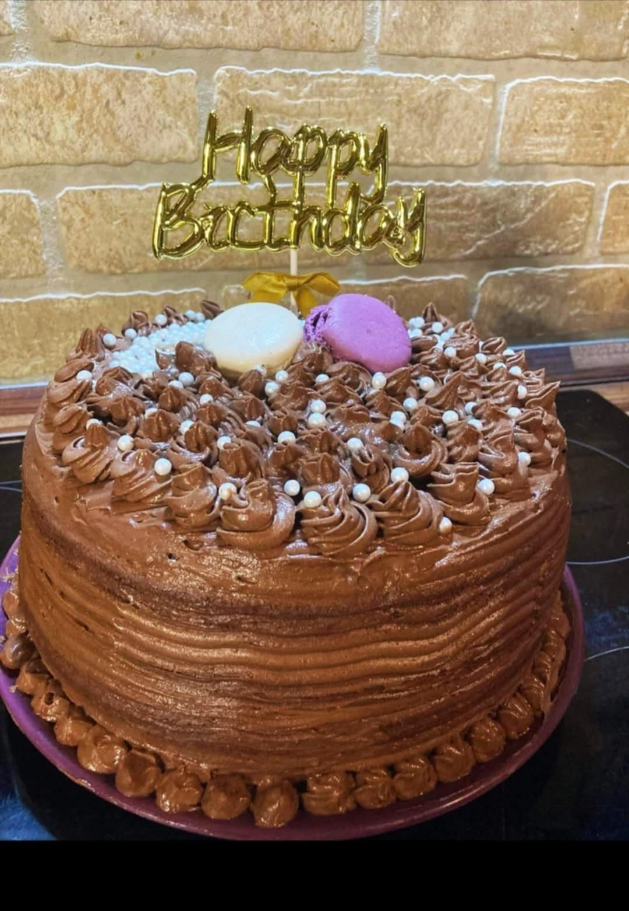

Választható kiegészítők:
Akár zsúr torta méretben vagy nyolc vagy 10 szeletes méretben is kérhető.
Vállalunk tortákkal kapcsolatban egyedi kérésket is.
Tortáim friss , minőségi összetevőkkel készülnek helyi őstermelők termékeivel.
